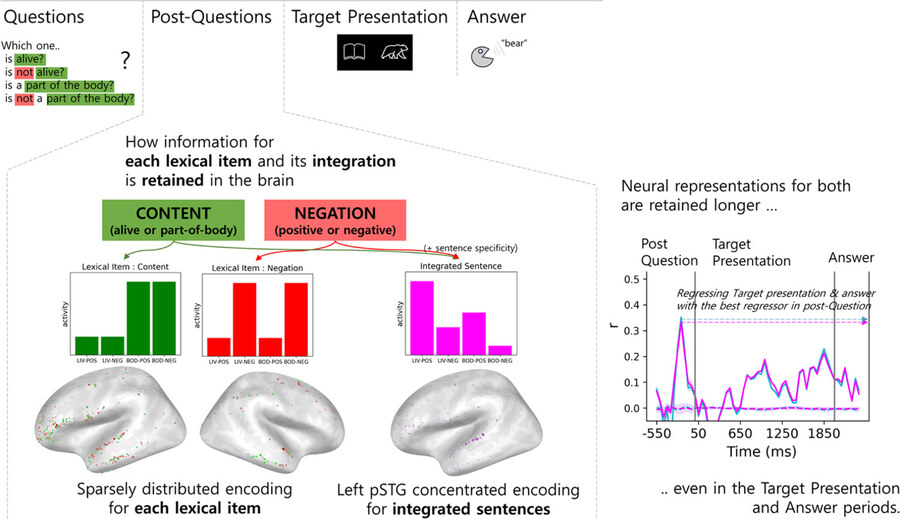
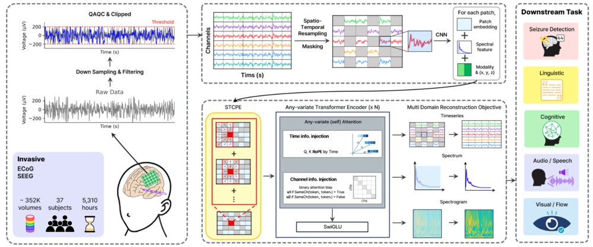

M.S. candidate in Neuroscience
Human Brain Function Laboratory
Seoul National University
Hello! I am Yonghyeon Gwon, an M.S. candidate in Neuroscience and a graduate researcher at the Human Brain Function Laboratory (HBF) at Seoul National University, under the supervision of Prof. Chun Kee Chung.
I am deeply interested in how the brain implements the hierarchical dynamics of language: how acoustic features become phonemes, how phonemes form words, how word meanings are integrated into sentence meaning, and how those representations build context and accumulate information at the pragmatic level. I aim to identify these processes through the dynamics of neurally instantiated features.
To address these questions, I have designed and conducted linguistic tasks with intracranial EEG (iEEG), examining how multiple levels of language are represented and integrated across speech perception and production. I also develop neural-to-speech methods that synthesize speech from decoded, multilevel linguistic information.
In parallel, I contribute to DIVER-1, an iEEG foundation model, through model development, large-scale data preprocessing, and downstream evaluation, with the goal of extracting richer information from iEEG. I have also worked with OPM-MEG and multi-unit activity (MUA) data. I received dual bachelor's degrees in Biological Sciences and Linguistics from Seoul National University and expect to complete my M.S. in Neuroscience there in August 2026.

